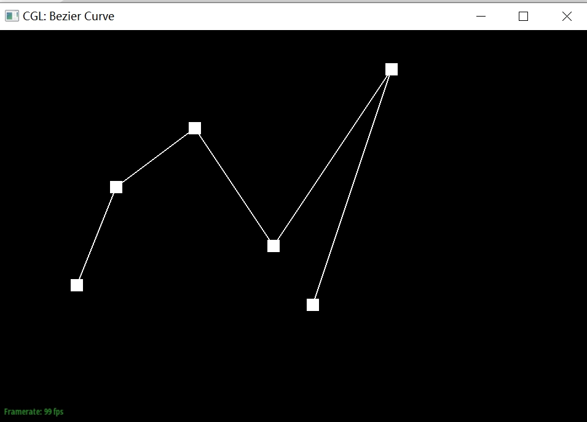
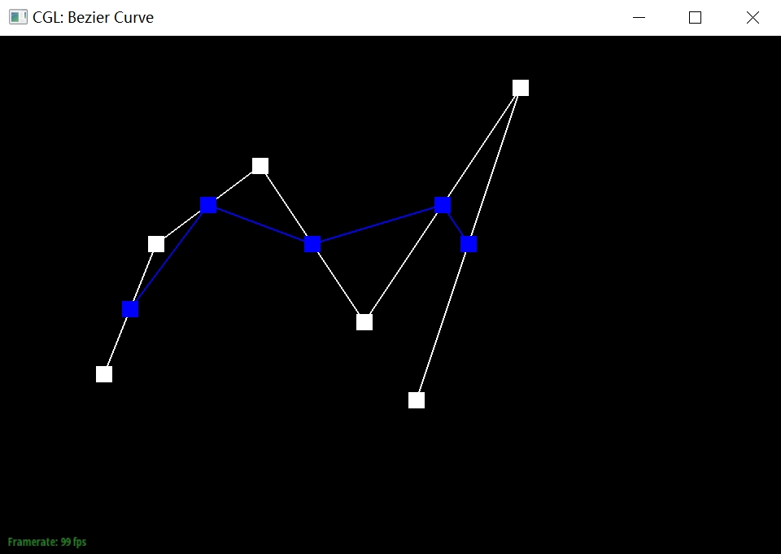
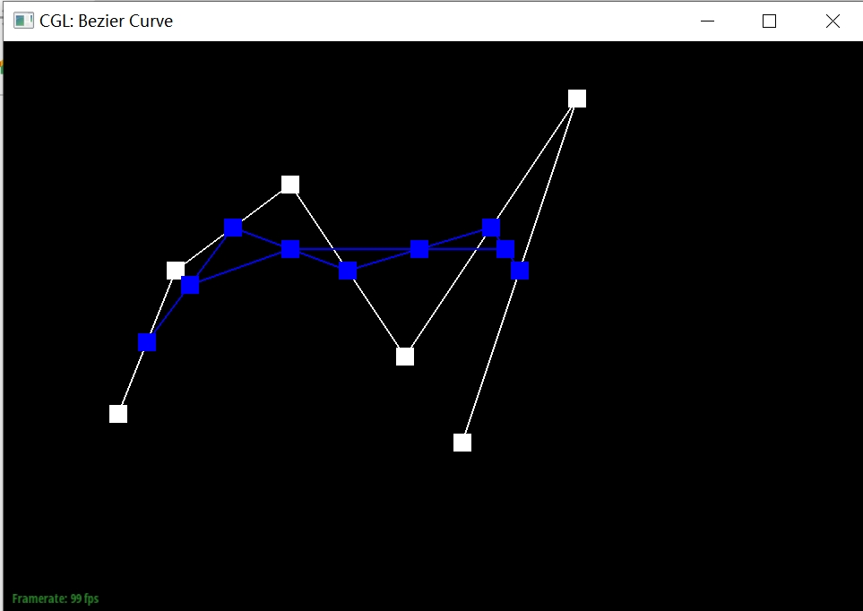
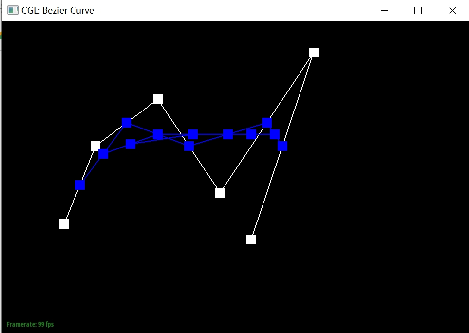
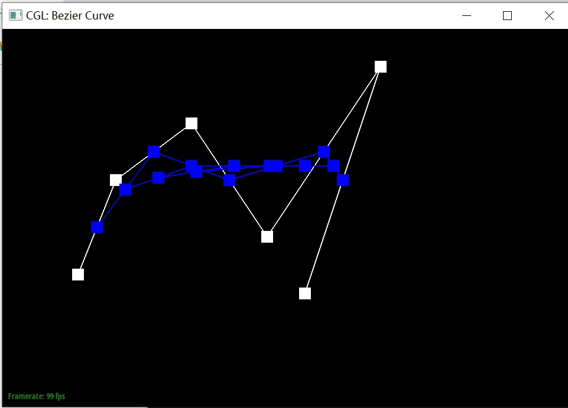
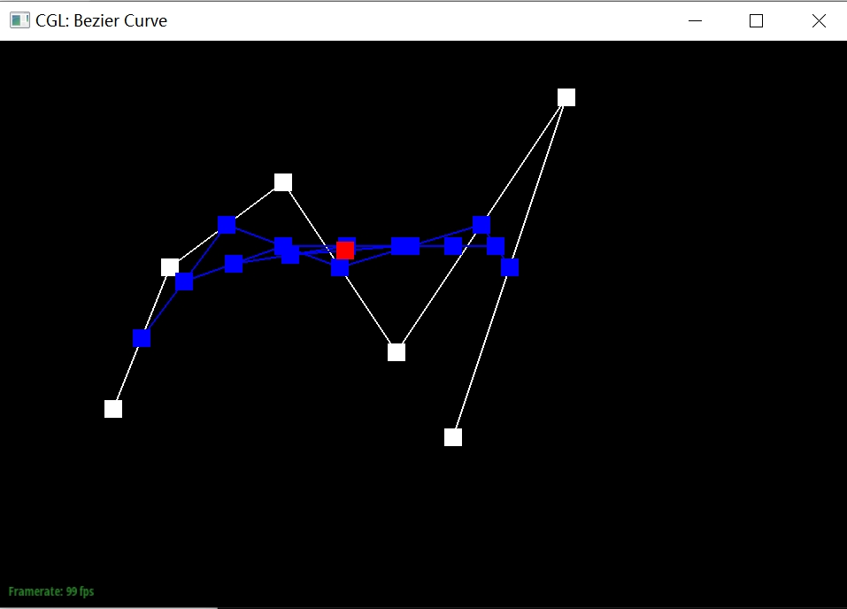
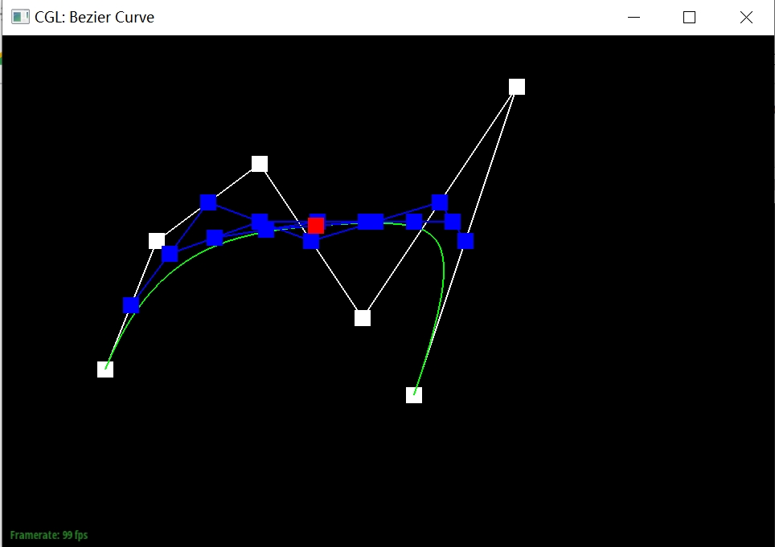
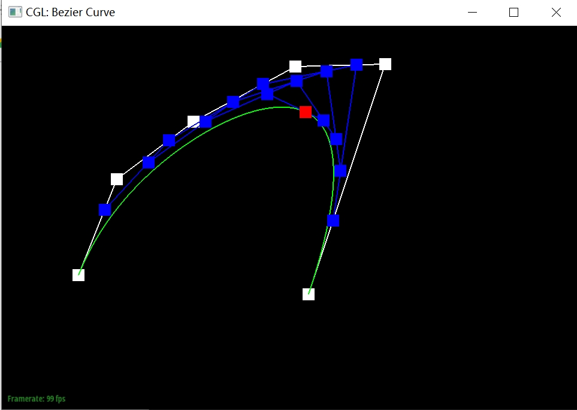

Leo Yuan & David Long
link: https://cal-cs184-student.github.io/hw-webpages-sp24-Kirtooo/
De Casteljau's algorithm is a algorithm that using input control points and parameter t to recursively generate intermediate points until there is only one points left. Here, we implemented one step of Bezier curve such that we used the provided n control points to generate n-1 intermediate points. Specifically, we linear interpolate every two adjacent control points to find a intermediate point. By recursively calling evaluateStep function, we will be able to finish the algorithm and generates the curve.
steps of Bezier curve
      Bezier curve after moving control points and change t:

Applying De Casteljau's algorithm to evaluate Bezier surface includes multiple steps.
Having the input grid and parameters u and v, we first creates Bezier curve on each row of the input grid with parameter u.
By doing so, we will have a point for every bezier curve created and we put all of them in a vector and evaluate with parameter v.
To implement this, we used evaluateStep and evaluate1D as helper function for evaluate.
evaluateStep is basically same as the function in task1, and in evaluate1D we recursively calls evaluateStep to generate one point for the Bezier curve.
Lastly, in evaluate, we calls evaluate1D for every row and calls it again for the vector that contains all the bezier curve.
Since we were given the vertex, we first get its halfedge h. Then, we loop around all the faces of this vertax by calling h->twin()->next() until we reach the halfedge again.
Within each iteration, we were able to get the two vector of the other two edges in triangle by calling h->next()->vertex()->position - h->vertex()->position; and h->next()->next()->vertex()->position - h->vertex()->position.
Then, we take the cross product of the two edges to get the normal vector to current face and added to the sum vector.
By doing so, we can get the sum of all normal vectors to triangles that this vertax is in.
Lastly, we normalize the sum vector and returns.